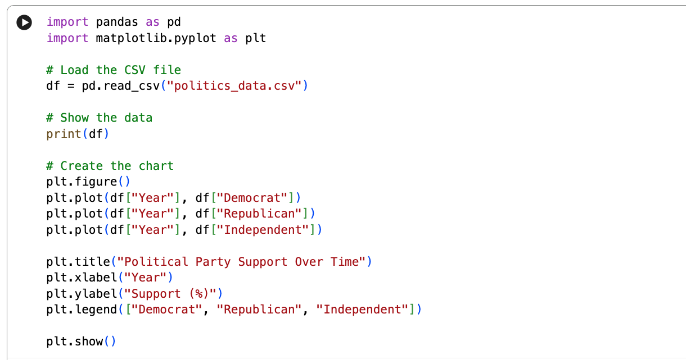
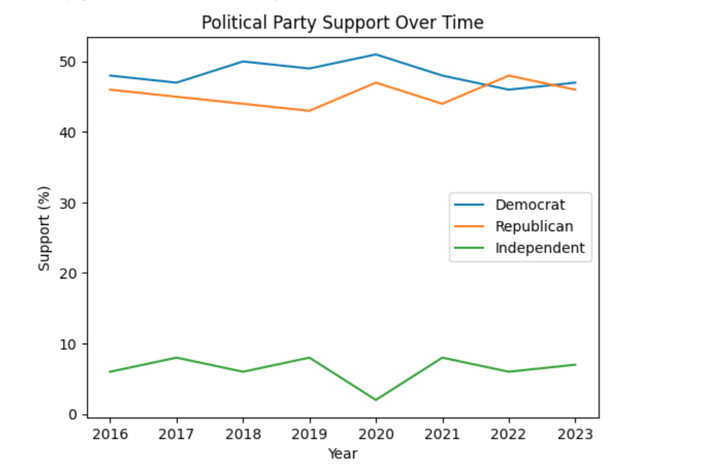

This page documents my Lab 05 experiments.
Experiment A: Portfolio Enhancement
I added a dark mode toggle using HTML, CSS, and JavaScript.
Experiment B: Python Code Generation
I used Google Colab to read a CSV of political party support and generate a line chart using pandas and matplotlib.
Python Code
Generated Chart Output
Experiment C: Debugging with AI
I intentionally broke an image path by changing the folder name from "images" to "image". The image failed to load. I used AI to identify the incorrect file path and fix it.
Broken Page